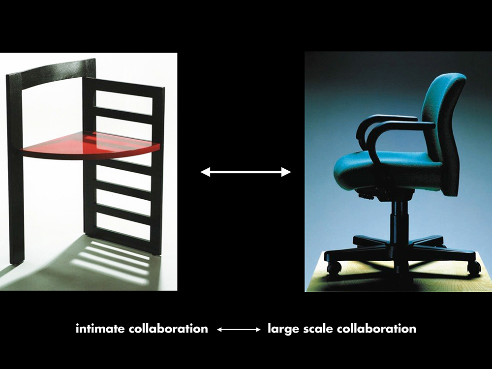

Frontier Airlines ticket counter posters, designed as a junior designer at Unimark International, 1967

Collaborative Furniture Design
Courtesty of the McCoys
Poster for Cranbrook's Graduate Design program
(TL) McCoy and McCoy, 1995; (TR) Cranbrook
Crane, 1994; (Bot.) Cranbrook logotype, 1994
Streams of Modernism
Courtesy of the McCoys
Cranbrook Design: The New Discourse, Rizzoli International,
1991, on 10 years of Cranbrook student, faculty, and alumni design work
Design Michigan educational posters 1 and 3, 1977, conceived,
written, and designed by a faculty/student team including Katherine
and Michael McCoy and Cranbrook design department graduate students.